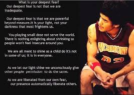
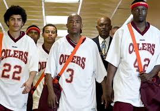
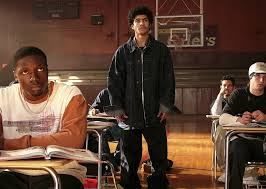
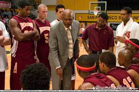

|
Coach Carter is a 2005 American biographical drama film directed by Thomas Carter. It is based on a true story of Richmond High School basketball coach Ken Carter portrayed by Samuel L. Jackson, who made headlines in 1999 for benching his undefeated high school basketball team due to poor academic results. The story was conceived from a screenplay co-written by John Gatins and Mark Schwahn, who created the TV series One Tree Hill. The film also recycles a handful of plot devices from another television series, The White Shadow, which director Carter also co-starred in. The ensemble cast features Rob Brown, Channing Tatum, Debbi Morgan, and musical entertainer Ashanti. |
|  |  |  |  |
Coach Ken Carter (Jackson) takes over the head coaching job for the Oilers basketball team at his old high school Richmond, having played on the team himself, earning unbeaten records. Carter quickly learns that the athletes are rude and disrespectful, and are in need of discipline. He hands the players individual contracts, instructing them to attend all of their classes, wear dress shirts and ties on game days, refer to everyone (players and coach alike) as "sir", and maintain a minimum 2.3 (C+) grade point average, among other requirements. He also teaches them to play a disciplined brand of basketball which includes an emphasis on fundamentals, execution, defense, and conditioning. Carter also asks the school staff for progress reports on the players' attendance. However, three players including Timo Cruz (Rick Gonzalez) refuse to follow the contract and quit the team. Carter's son Damien (Robert Andrew Richard) later decides to join the team, after quitting the private school St. Francis to play for his father. Teammate Kenyon Stone (Rob Brown) struggles to come to terms with his girlfriend Kyra (Ashanti) being pregnant; unsure if he can juggle basketball and aspire for college. Later, Cruz makes a valiant effort to rejoin the basketball team after watching them perform at a game in an inspiring victory and also after witnessing his only family member- who happens to be his cousin (a drug dealer)- shot one night in the streets, which Carter accepts. The team goes on to post an undefeated record eventually winning a seasonal basketball tournament. However, Carter later discovers the progress reports filled out by the faculty reveal some of the students have been skipping classes and floundering academically. Carter initiates a lockdown on the gym, banning the team from playing until they improve their grades. The act angers the locals, as Carter is criticized by parents and academic personnel alike. The school board eventually confronts Carter, who justifies his actions, explaining he wants to give his team the opportunity and option for further education so they won't resort to crime, asserting that achieving a sound education is more important for the students than winning basketball games. The board, aside from Principal Garrison (Dowse) and the chairman, vote to end the lockout, much to Carter's dismay. Just when Carter is about to quit in disgust (after promising to do so if they vote to end the lockout), he is shocked to find his players in the gym with desks and teachers studying and working to bring their grades back up. The athletes decide to fulfill Carter's original intention of pursuing academic achievement before continuing to play their next game, with one explaining that the school board can force an end to the lockout, but the players can't be forced to play. They work hard in the classroom, study after school during practice time, and eventually raise their grade point average to a point that fulfills their end of the contracts they signed. The Oilers eventually end up competing in the regional high school playoffs, but ultimately lose to St. Francis. Nonetheless, Carter is proud that the players accomplished their goal of attaining a proper education with athletics. The film's epilogue displays a series of graphics stating that a number of players went on to attend college furthering their study.